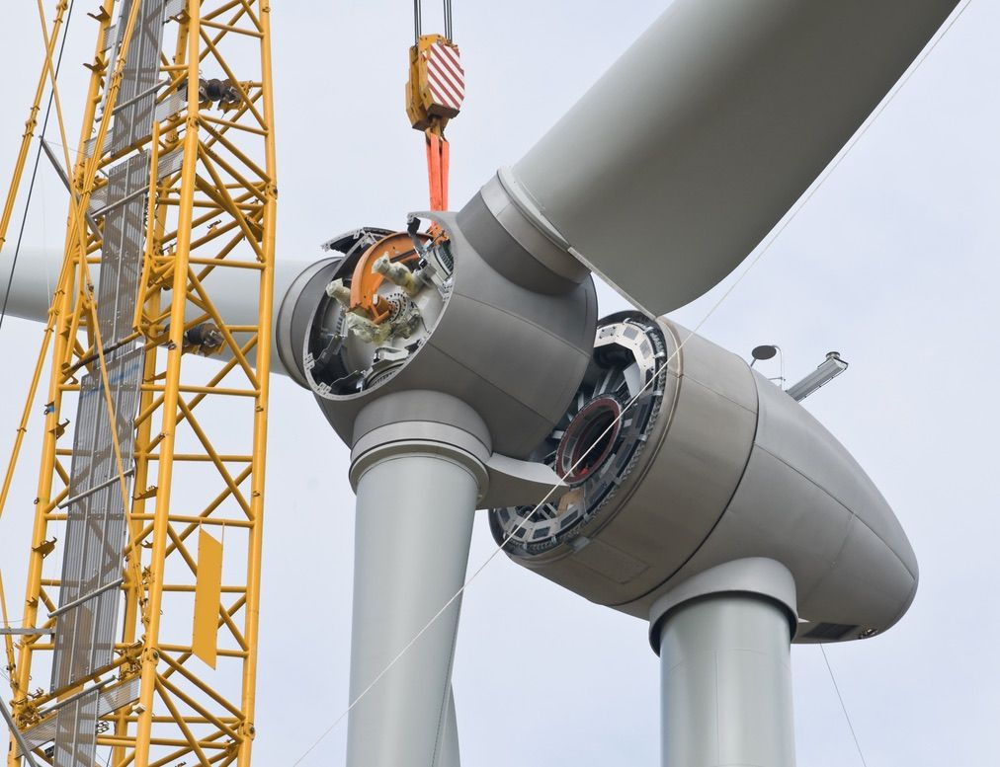
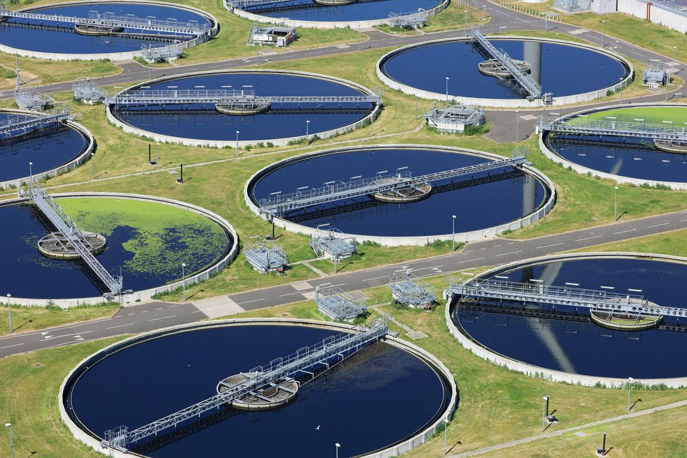
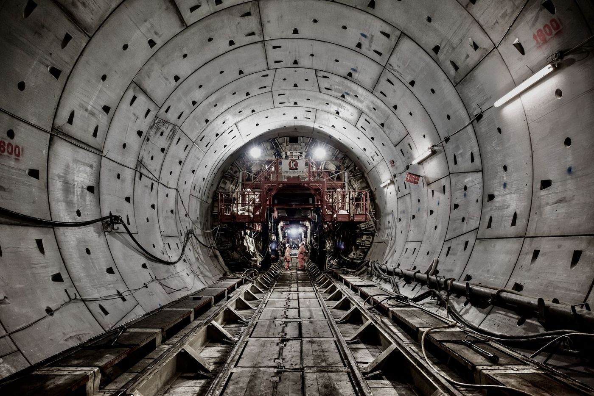
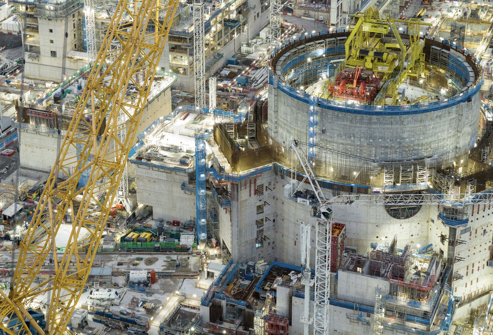
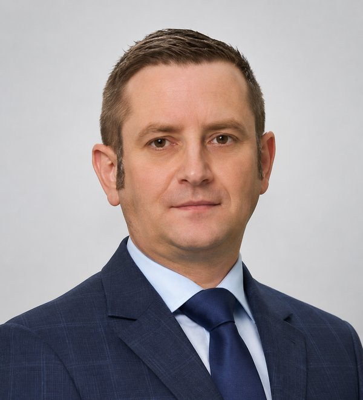
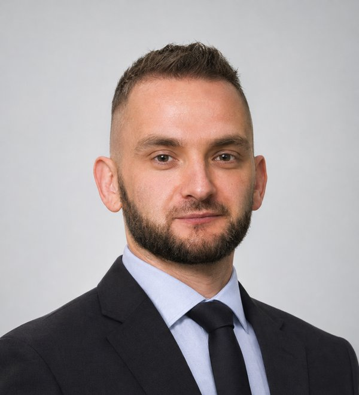
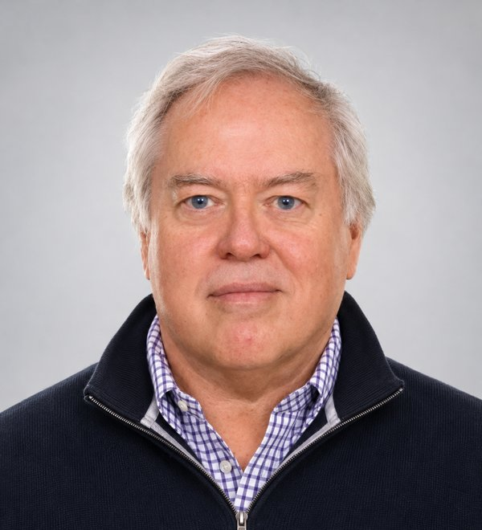
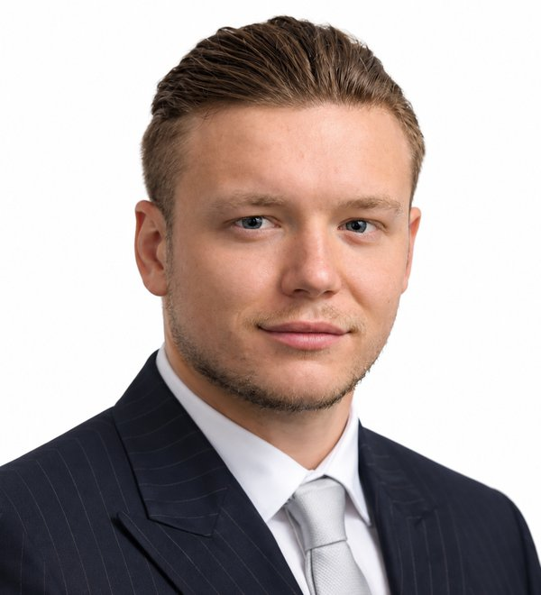

Exceeding your expectations
Davies Kelly is an international consultancy providing specialist pre-contract advice, project advisory, dispute resolution and expert witness services for the construction industry.
Our team of experts advises on all aspects of a project from inception to completion together with any contentious matters.
We have advised, represented, and been appointed as independent experts by leading international law firms, as well as international contractors and developers, across all forms of Alternative Dispute Resolution, from Mediation to International Arbitration.
Our Principles
Because every construction project is unique, no company can offer you a ‘one size fits all’ solution that will achieve a successful outcome. At Davies Kelly we use our extensive knowledge and in-depth expertise to tailor solutions to our clients’ needs.
- This means putting our clients’ interests at the forefront of everything we do.
- No one else will provide you with such impartial, truly objective advice and independent expert opinion.
- We pride ourselves on providing you with unrelenting client focus.
- We go the extra mile to deliver value for money to our clients.
- We constantly strive to find innovative solutions to your problems.
- We adhere to a strict moral and ethical code and are totally transparent.
We gave the client our expert opinion. It cost us two million dollars. So how come that made Jamie smile?
When a multi-national engineering and contracting company believed it was entitled to compensation, they engaged a claims consultancy to put a value on it. That estimate was in the tens of millions of dollars. But as we had an ongoing relationship with the client, they asked us to review it. We discovered some significant flaws and weaknesses in the analysis as well as the valuation.
So we advised the client that it would be unlikely that even a fraction of the money suggested by the consultancy would be recovered. Based on our advice the client was able to decide whether to commit significant fees to pursue it. Had it been unsuccessful, which in our opinion it would have been, the client would not only have lost but would potentially have been liable for the other party’s costs, in addition to the fees the consultants had already charged.
So instead of pursuing something they had little or no chance of winning, we saved the company millions of dollars in legal and expert fees. And although we didn’t generate any unnecessary fees, we did gain a new, very happy client.
“We always put our clients’ interests first by providing truly objective and impartial advice. We believe our clients’ interests should be at the heart of everything we do, even though we’d just talked ourselves out of the significant fees we could have made by agreeing with the consultancy and advising them to take legal action.”
Sectors
We work on construction, engineering and energy projects across the Middle East, Africa and Asia.

Renewable energy
Water & wastewater
Tunnelling & rail
Power & infrastructureOur Services
Our combination of specialist skills and experience enables us to provide our clients with sound and robust advice.
Pre-Contract Advice
[description to add]
Project Advisory
[description to add]
Dispute Resolution
[description to add]
Expert Witness Services
[description to add]
Why choose us?
High quality
We pride ourselves on delivering nothing but the finest quality in everything we offer.
On budget
We understand the importance of staying within financial constraints without compromising on quality.
On schedule
We understand the significance of adhering to schedules and the impact it has on the success of your project.
Meet Our Experts
Your key specialists and points of contact at Davies Kelly are:

Jamie Shafto
Jamie is a testifying delay expert with over twenty-three years’ experience in the construction industry in the UK and the Middle East [years as at 2023 – update]. A founding partner of Davies Kelly, he is experienced in project management, development management, claims and contract consulting. He is regularly appointed as an independent expert witness in ICC and DIAC arbitrations and has often been cross-examined by Queen’s Counsel.

Michael Roos
Michael is a legally qualified testifying quantum expert with over 14 years of construction industry experience in the UK, Europe and the Middle East [years as at 2023 – update]. His experience spans retail, aviation, rail, residential, hospitality, health care, infrastructure, oil and gas, water distribution and desalination plants. He has been regularly appointed as an independent expert witness, has provided written and oral evidence, and has been cross-examined in ICC arbitrations.

Eur Ing Stephen M John
Chartered engineer, management consultant and international arbitrator; adjudicator, mediator and expert witness on engineering, contracts, claims and disputes. consultsmj.co.uk

Michael Whiting
Quantum and forensic analysis of construction claims. Began his construction career at 16 with Balfour Beatty. [Qualifications to add]
What our clients say
“I have no hesitation in recommending Michael Roos and Davies Kelly to clients. Michael worked with me on consultancy advice and support for engineering and construction contracts, claims, disputes, arbitrations and expert witness assignments for a number of years in the Middle East.
He is very knowledgeable, well qualified, smart and hard working. He has an ability to quickly grasp the essentials of matters in dispute in detail and develop winning strategies. I am sure his new consultancy business will be successful and will deliver value and the best chances of success for their clients.”
[Steve is now on the team – keep or drop this testimonial?]
Contact Us
We constantly strive to find innovative solutions to your problem. Get in touch.
Jamie Shafto
Michael Roos
Address
48 Burj Gate Tower, Sheikh Zayed Road, Downtown, PO Box 116171, Dubai, UAE
LinkedIn